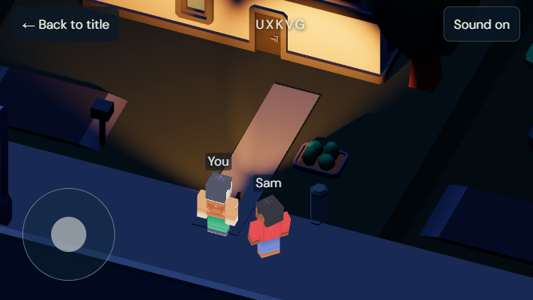

Characters are now about 63 pixels tall on the phone. Real warm spotlights light surfaces with soft edges; the translucent wedges are gone. Blue moonlight preserves silhouettes. The closer phone crop shows less of the full diorama than Mood A. Kit characters and houses remain simpler, foliage is sparse, and ground materials lack grass, leaves and weathering. There is no atmospheric scattering. Two consistent shadow-casting seats keep the cost bounded; additional beams light surfaces without dynamic occlusion. Footprints remain outside this pass.